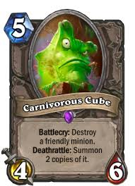

버티기, 광역기, 킬각잡기, 체력회복, 뒷심, 필드싸움 전부 뛰어난 이론상 만능 컨트롤덱.
원래 컨트롤흑마에서 파생된건데 얘네가 하이랜더 사제만 만나면 개뚜드려맞고 쳐발림.
그래서 하이랜더사제 잡자고 만든게 큐브흑마인데 생각보다 오지게 좋아서 개나소나 다쓰기 시작함.
덱자체가 욕심이 많아서 핸드 영향을 크게 받음. 이를테면 만아리 나오라며 기도하는 사람들 개많음 ㄹㅇ..
다만 이덱도 컨덱인지라 순간순간의 상황판단이 크게 영향을 끼치고, 모독각 계산하는 실력같은것도 중요함.
다만 핸드 개잘풀린 큐브흑 상대로만나면 ㄹㅇ 극대노해서 샷건 28번 칠 수 있으니 주의해야함.
키카드 나오기 전에 명치 털어버리는 비밀법사나, 키카드 다시 핸드로 집어넣고 태워버리는 왕파도적같은 애들이 카운터임.
그리고 원한 맺힌 소환사같은걸로 사기치는 사제도 카운터임. 물론 얘네가 이렇게 사기치면 카운터를 못치는 덱은 없겠지만..
하이랜더 사제 사라지고 비법이 판쳐서 잠깐 주춤하긴 했는데, 생각보다 키카드가 유효한게 많아서 다음 확장팩때도 활약할 예정임.